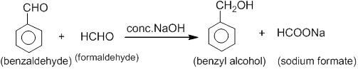
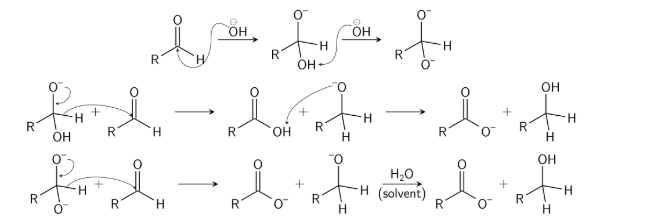

Cannizzaro reaction is a chemical reaction in which aldehydes having no α-hydrogen undergo self oxidation and reduction (disproportionation) in the presence of a concentrated base such as NaOH or KOH. One molecule of aldehyde is oxidized to a carboxylic acid, while the other is reduced to an alcohol.
2 RCHO + OH⁻ → RCOO⁻ + RCH₂OH
Benzaldehyde undergoes Cannizzaro reaction in presence of concentrated NaOH to give benzyl alcohol and sodium benzoate.
2 C₆H₅CHO → C₆H₅CH₂OH + C₆H₅COONa
Crossed Cannizzaro reaction
The Crossed Cannizzaro reaction is a chemical transformation where two different non-enolizable aldehydes (aldehydes
without-hydrogens) react in a strong base to produce a mixture of two different alcohols and two different carboxylic acids.
It is commonly used to improve yields, frequently using formaldehyde as a "sacrificial" reducer to turn a more valuable
aldehyde into an alcohol, while the formaldehyde oxidizes to sodium formate.

The reaction involves a nucleophilic acyl substitution on an aldehyde, with the leaving group concurrently attacking another
aldehyde in the second step. First, hydroxide attacks a carbonyl. The resulting tetrahedral intermediate then collapses,
re-forming the carbonyl and transferring hydride to attack another carbonyl In the final step of the reaction, the
acid and alkoxide ions formed exchange a proton. In the presence of a very high concentration of base, the aldehyde
first forms a doubly charged anion from which a hydride ion is transferred to the second molecule of aldehyde to form
carboxylate and alkoxide ions. Subsequently, the alkoxide ion acquires a proton from the solvent.

1. Cannizzaro reaction occurs in:
Aldehydes with α-hydrogen